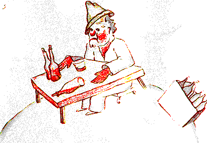

El siguiente planeta estaba habitado por un bebedor. Esa visita fue muy corta, pero hundió al principito en una gran melancolía:
- Qué haces ahí ? – le dijo al bebedor, que encontró instalado en silencio ante una colección de botellas vacías y una colección de botellas llenas.
- Bebo – respondió el bebedor, con aire lúgubre.
- Por qué bebes ? – le preguntó el principito. 
- Para olvidar – respondió el bebedor.
- Para olvidar qué ? – inquirió el principito, que ya lo compadecía.
- Para olvidar que tengo vergüenza – confesó el bebedor bajando la cabeza.
- Vergüenza de qué ? – se informó el principito, que deseaba socorrerlo.
- Vergüenza de beber ! – concluyó el bebedor que se encerró definitivamente en el silencio.
Y el principito se fue, perplejo.
Los adultos son decididamente muy pero muy extraños, se decía a sí mismo durante el viaje.
| Chapitre XI | |
Capítulo XI |
| Chapitre XII | Índice | |
| Chapitre XIII | Capítulo XIII |